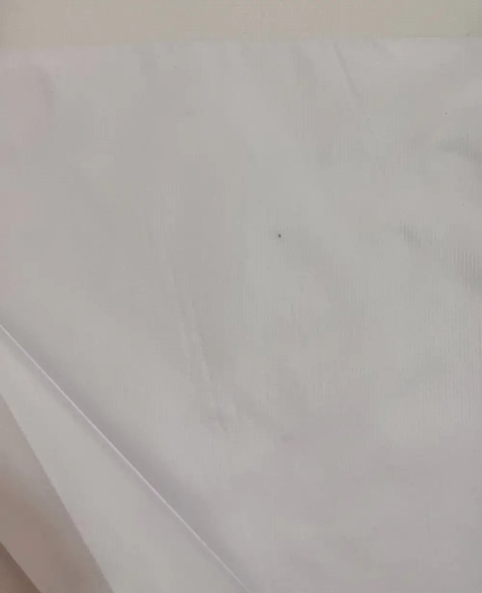

Nylon and ripstop fabrics from India
Lightweight, strong nylon wovens for outerwear and outdoor brands, sourced from Indian mills and checked against your spec before bulk.

The range
| GSM | Composition | End use |
|---|---|---|
| 36 GSM | 100% Nylon | Down jackets, packable windbreakers |
| 52 GSM | 100% Nylon | Ultralight shells, insulation liners |
| 75 GSM | 100% Nylon | Windcheaters, light rainwear |
| 104 GSM | 100% Nylon | Jackets, pullovers |
| 112–130 GSM | Nylon and Nylon DD | Hiking shells, trekking pants |
| 130 GSM | 100% Recycled Nylon | Eco outerwear, anoraks |
Ripstop for packable outerwear
Our partner mills weave 20D nylon ripstop in 380T–400T constructions at around 35–55 GSM, the typical base for packable down jackets, puffers and ultralight windbreakers. Our sample album includes a 39 GSM ultralight ripstop finished with fluorine-free C0 DWR.
Finishes
C0 DWR (fluorine-free water repellency) is our standard finish for nylon shells, windbreakers and rainwear. Anti-odour is available on heavier hiking and trekking qualities.
Testing before bulk
We agree test methods and pass levels with your QA team up front, for example water repellency to ISO 4920 / AATCC 22 and abrasion to ISO 12947-2, and collect lab reports before bulk starts.
Request specifications and pricing
Tell us the fabric, GSM, finish and end use. We share the spec sheet, test reports and a physical swatch.
Send a fabric enquiryDownload the collection (PDF)